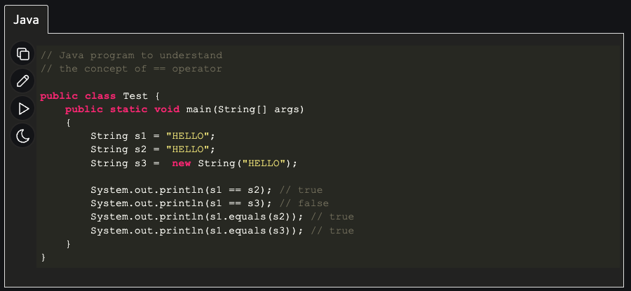
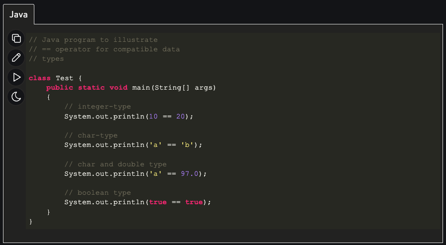
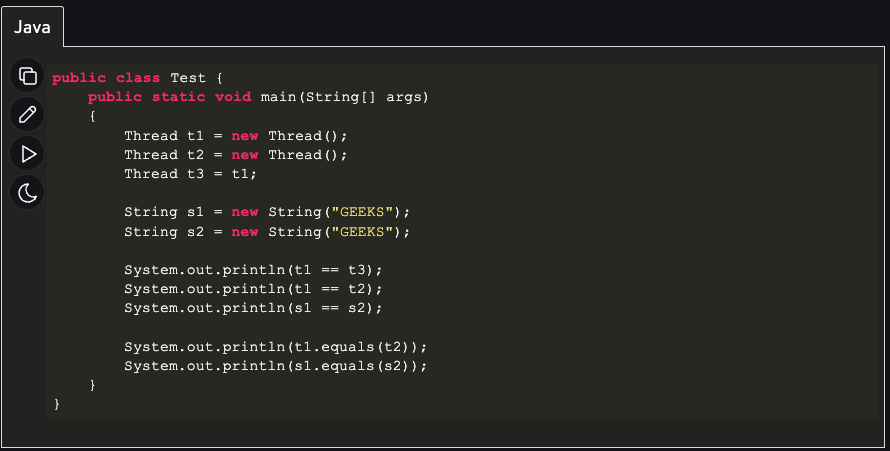

Robert Tisdale
Dec 19, 2022
| Parameter | If-Else | Switch |
| Definition | The if and else blocks are executed depending on the condition in the if statement | The switch statement has multiple cases, and the code block corresponding to that case is executed |
| Evaluation | Used for integer, character, pointer, floating-point type, or Boolean type. | Used for character expressions and integers. |
| Testing | Tests both logical expressions and equality | Tests only equality |
| Expression | Multiple statements for multiple decisions | Single statements for multiple decisions |
| Default Execution | If the condition inside the if-statement is false, then the code block under the else condition is executed | If the condition inside switch statements does not match any of the cases, the default statement is executed. |
| Sequence of Execution | Either the code block in the if statement is executed or the code block in the else statement. | The switch case statement performs each case until a break statement is encountered or the end of the switch statement is reached. |
| Speed | If you use 'if-else' to implement several options, the speed will be slow | If we have numerous options, the switch statement is the best solution because it executes considerably faster than the 'if-else' statement. |
| Editing | Difficult to edit nested if-else statements | Easy to edit. |
| Values | Based on constraint | Based on user |
Both parameters have their pros and cons; switch statements provide a limited subset of evaluations it can make (only char and int) where if-else is much more verbose and allows for multiple statements and multiple logic. However, switch statements are much easier to implement and modify making them very fast. Overall if the logic required is more on the simplistic side, switch statement is more than likely your go-to.
A single '=' is used to for allocated specific values to variables. Ex. (int String = name
Generally speaking "==" in operator which compares two objects in Java, as well as checks if both object point to the same memory location.
.equals() and '==' both share similarities, however the main difference between both of them is that one is an operator and the other is a method.
